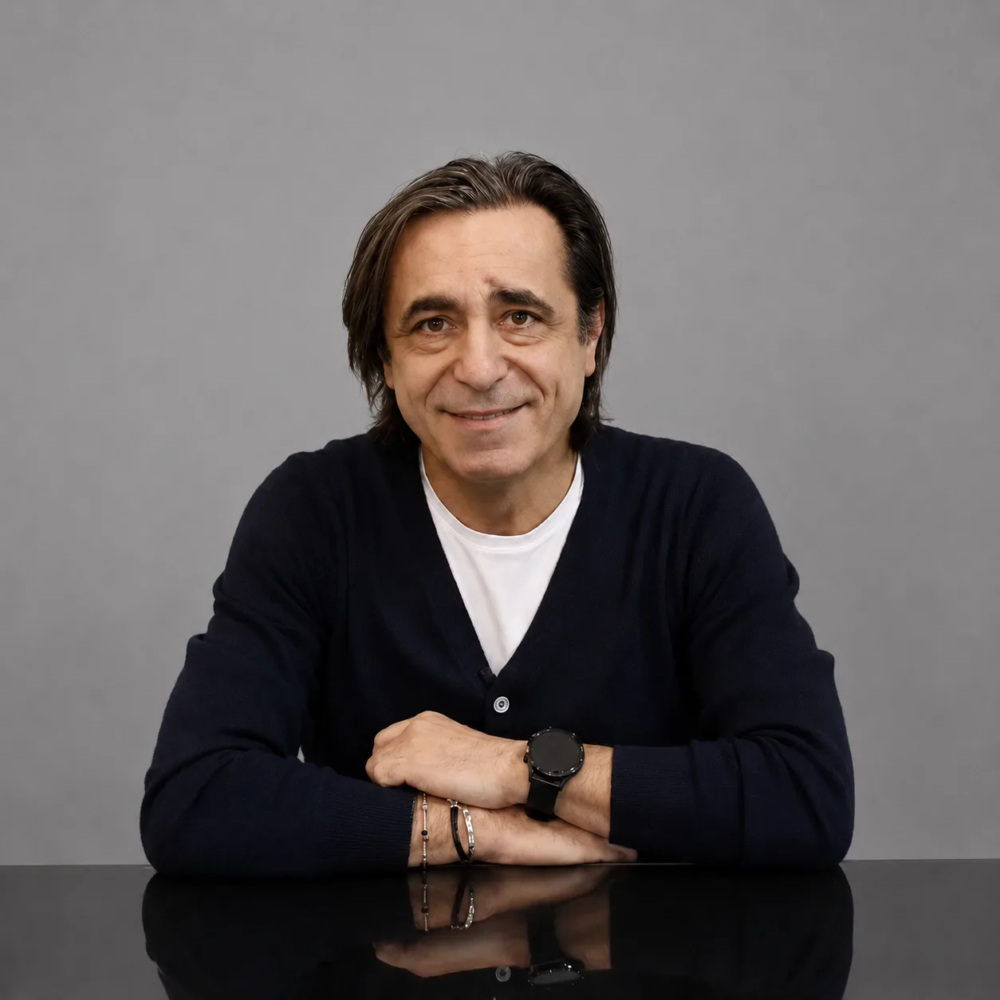
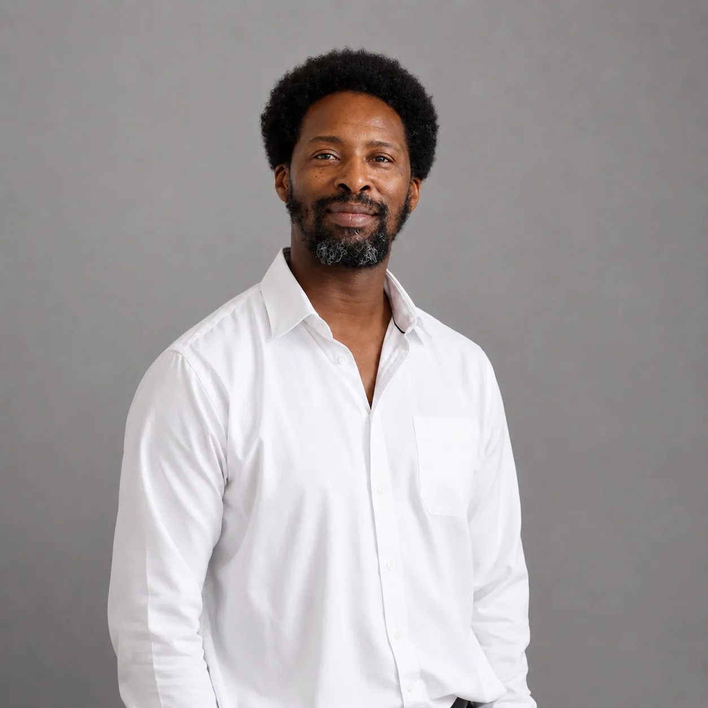
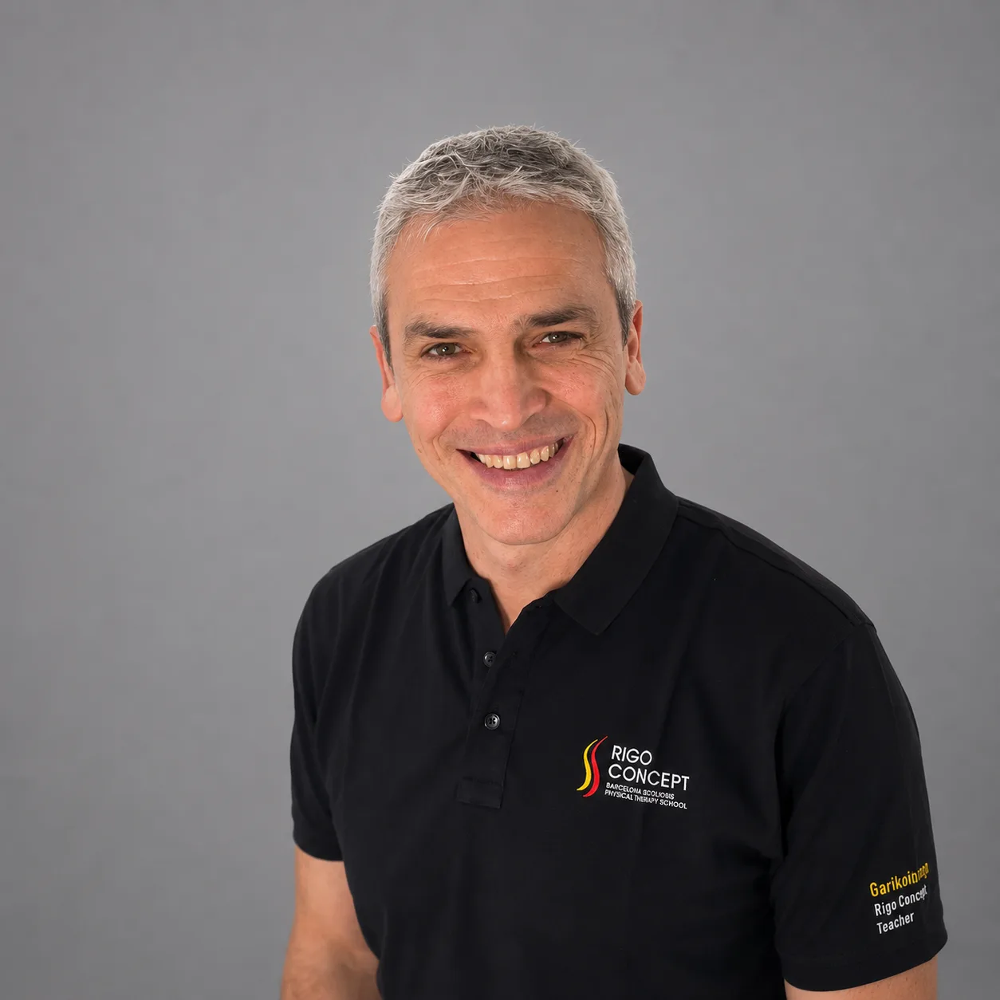
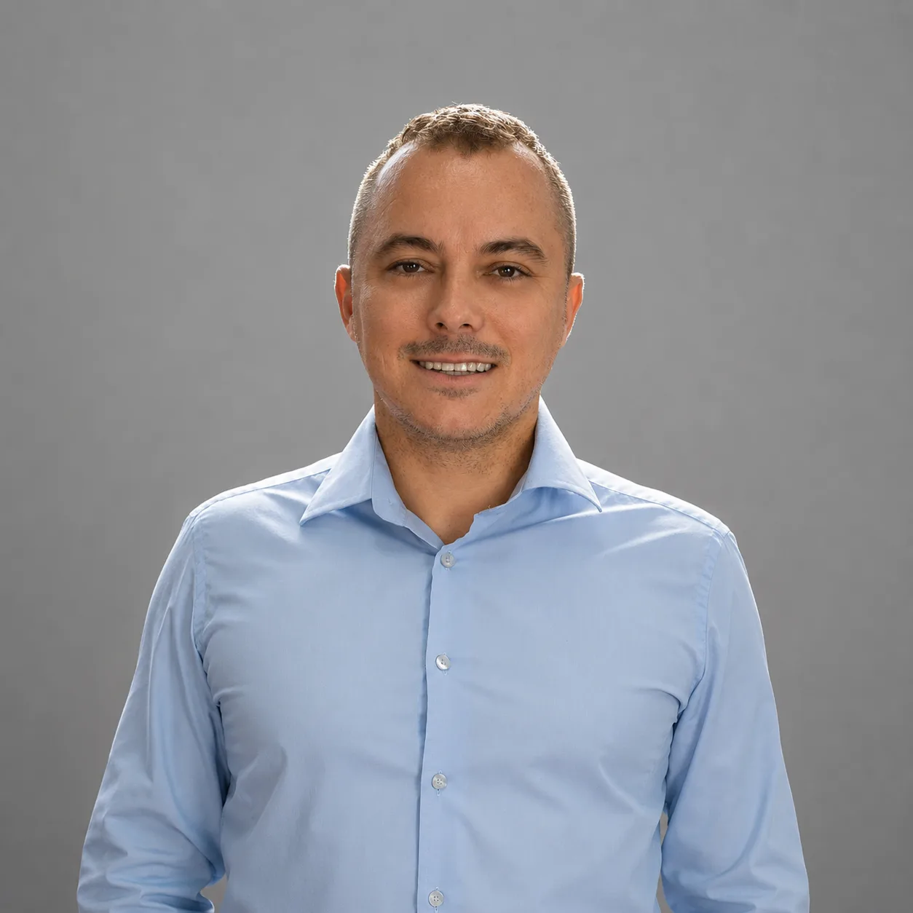
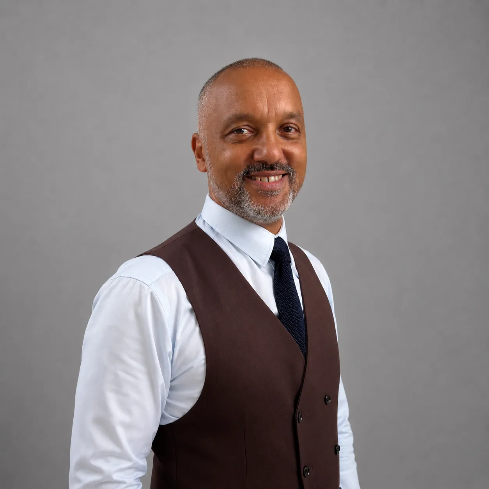

Член експертної ради
Експертний напрям
Команда провідних фахівців, яка формує експертний напрям діяльності Асоціації та сприяє розвитку сучасних доказових підходів до діагностики, лікування й реабілітації пацієнтів зі сколіозом.





Склад ради буде доповнюватись.